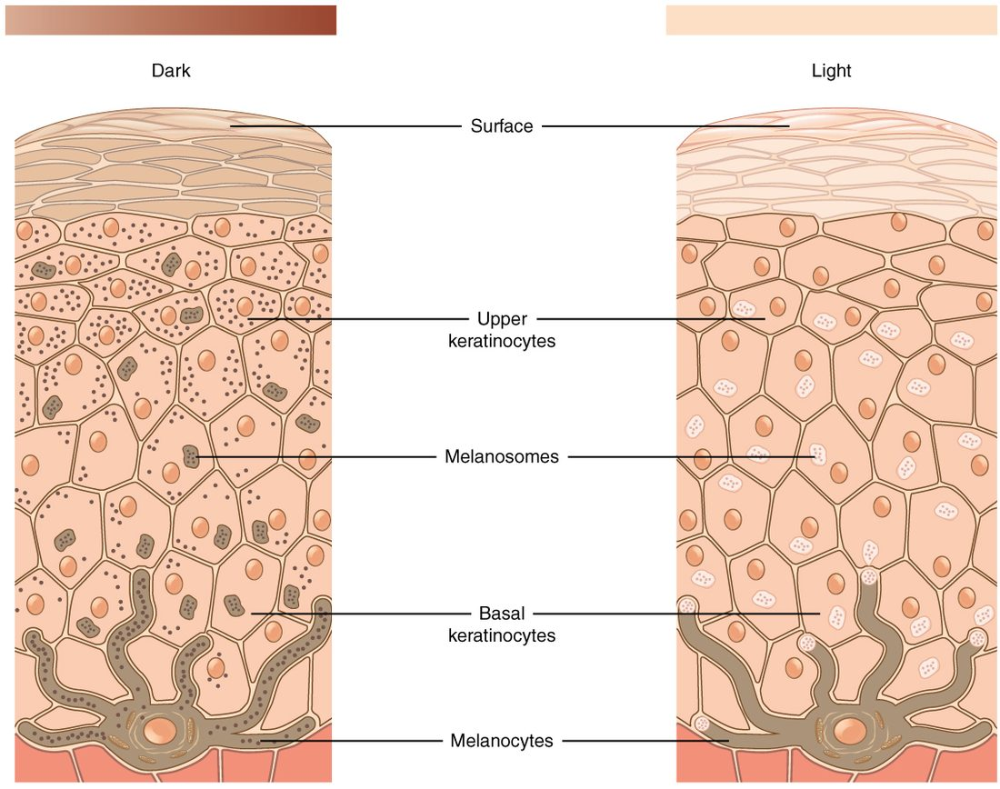

The layers of the skin are the epidermis on the surface, the dermis beneath it, and the hypodermis that anchors both to the muscles below. This page takes them one at a time: the five strata of the epidermis and the keratinocytes that climb through them, the pigment cells and immune cells scattered among them, the difference between thick and thin skin, the two layers of the dermis, the fatty hypodermis, and what sets the color of your skin.
The integument: an organ you can see
Pinch the skin on the back of your hand and lift it. You are holding an organ about 1 to 4 mm thick, which covers roughly 1.8 square meters in an average adult. It has its own blood supply, nerves, muscles and glands, and it is built from all four tissue types.
That covering is the integument (in- = on, teg- = to cover): your skin. The integumentary system is the skin plus its accessory structures, the hair, nails and skin glands, which the next topic covers. You met the skin in the tissue membranes topic as the cutaneous membrane: an epithelial membrane with a dry surface. Here you look at it layer by layer.
The skin has two layers, and a third lies beneath it (Figure 1):
- the epidermis, a keratinized stratified squamous epithelium on the surface
- the dermis, a thick layer of connective tissue that holds the blood vessels, nerves and glands
- the hypodermis, a layer of loose connective tissue and fat under the dermis. It is not part of the skin itself, but it is studied with it because it ties the skin to the body.

| Epidermis | Dermis | Hypodermis | |
|---|---|---|---|
| Tissue | Keratinized stratified squamous epithelium | Connective tissue: areolar on top, dense irregular below | Areolar and adipose tissue |
| Blood vessels | None (avascular); fed by diffusion from the dermis | Many: capillary networks, larger vessels deeper down | Larger vessels that supply the dermis |
| Main cells | Keratinocytes, with melanocytes, tactile cells and Langerhans cells | Fibroblasts, with macrophages and mast cells | Adipocytes (fat cells), fibroblasts |
| Fibers | None outside the cells; keratin filaments inside them | Collagen and elastic fibers | Loosely arranged collagen and elastic fibers |
| Typical thickness | About 0.1 mm in most places; up to about 1.5 mm on the soles | About 1 to 4 mm | Varies with body fat, from almost none to several centimeters |
| Can it regrow after injury? | Yes: its basal cells divide throughout life | Partly: deep damage heals with scar tissue | Partly: fat and connective tissue refill slowly |
The epidermis and its keratinocytes
A paper cut that does not bleed has stayed inside the epidermis. The epidermis (epi- = upon, derm- = skin) has no blood vessels. Its cells live on nutrients and oxygen that diffuse up from capillaries in the dermis. That is why a shallow cut stings but does not bleed: it has not reached a vessel.
About 90% of epidermal cells are keratinocytes (kerat- = horn, -cyte = cell): cells that make keratin, the tough fibrous protein you met in stratified squamous epithelium. Keratin filaments are a kind of intermediate filament. Keratinocytes are tied to each other by many desmosomes, so the epidermis holds together as a sheet when you pull on it.
Every keratinocyte starts life at the bottom of the epidermis and ends it at the top. On the way it changes shape, fills with keratin, builds a waterproof seal around itself, and dies. The layers of the epidermis are snapshots of that journey.
The five layers of the epidermis
The epidermis is divided into layers called strata (singular stratum, Latin for "layer"). Figure 2 shows all five, from deep to superficial.

Stratum basale
The stratum basale (bas- = base), the deepest layer, is a single row of cuboidal to columnar cells resting on the basement membrane. The dermis below pushes up into it in folds, which gives the two layers a large, wavy contact surface and locks them together.
Most of its cells are basal cells: stem cells that divide by mitosis throughout your life. Each division leaves one cell in place as a stem cell and pushes the other upward, where it becomes a keratinocyte. Two other cell types also sit here, melanocytes and tactile cells, described below.
Stratum spinosum
The stratum spinosum (spin- = thorn, spine) is 8 to 10 rows of keratinocytes that are busy making keratin. Under the microscope its cells look spiny. The spines are an artifact of slide preparation: the cells shrink as the tissue is prepared, but their desmosomes hold, so each cell stays tethered to its neighbors at many points. Those tethers are the spines. The Langerhans cells (below) sit mostly in this layer.
Stratum granulosum
The stratum granulosum (granul- = little grain) is 3 to 5 rows of flattening cells in which two kinds of granule appear:
- Keratohyalin (kerat- = horn, hyal- = glassy) granules hold proteins that bind the keratin filaments into dense, cross-linked bundles.
- Lamellar granules (lamell- = thin plate) hold lipids. The cells release them into the spaces between cells by exocytosis. The lipids spread into sheets that seal those spaces against water.
In the same layer, enzymes break down each cell's nucleus and organelles. By the top of the stratum granulosum the cells are dying.
Stratum lucidum
The stratum lucidum (lucid- = clear) is a thin, clear band of 2 to 3 rows of flat, dead cells. It is found only in thick skin. Its cells are packed with eleiden, a clear protein formed from keratohyalin, which makes the band look glassy on a slide.
Stratum corneum
The stratum corneum (corne- = horn) is the surface layer: about 15 to 30 rows of flat, dead cells in thin skin, and many more in thick skin. Each cell is a flattened envelope of cross-linked keratin with no nucleus, set in the lipid sheets from the lamellar granules, like bricks in mortar. The dead cells at the top loosen and are shed constantly, as tiny flakes you never notice.
A keratinocyte takes roughly four to eight weeks to travel from the stratum basale to the point where it is shed. Estimates vary with body site and age.
How a keratinocyte matures
Put the layers together and you have one sequence:
- A basal cell in the stratum basale divides by mitosis.
- One daughter cell is pushed up into the stratum spinosum by the cells made beneath it, and it makes keratin filaments and desmosomes.
- In the stratum granulosum, keratohyalin binds the filaments into bundles, lamellar granules release their lipids, and the nucleus and organelles break down.
- In thick skin, the dead cell passes through the stratum lucidum.
- In the stratum corneum, the flat, keratin-filled cell lies in the lipid sheets until it is shed.
This process is called keratinization (or cornification). The death of the cell is part of the program, not an accident of distance from the blood supply: the keratinocyte actively dismantles its own nucleus while it builds the keratin envelope that will outlast it.
Thick skin and thin skin
Look at your palm, then the back of your hand. The palm has ridges, no hair and a tougher surface. That is thick skin. It covers the palms, the soles and the palm side of the fingers and toes. Everywhere else you have thin skin.
"Thick" and "thin" describe the epidermis, not the whole skin. The skin of your upper back is the thickest skin on your body overall, because its dermis is so deep, yet it is thin skin: its epidermis has only four strata.
Figure 3 compares the two.
| Thin skin | Thick skin | |
|---|---|---|
| Where | Most of the body | Palms, soles, palm side of fingers and toes |
| Epidermal thickness | About 0.1 mm | About 0.4 to 1.5 mm |
| Number of strata | Four | Five |
| Stratum lucidum | Absent | Present |
| Stratum corneum | Thin | Very thick |
| Hair | Present almost everywhere | None |
| Surface ridges | Faint fine lines | Friction ridges (fingerprints) |
Melanocytes and melanin
Spend a week at the beach and the skin on your shoulders darkens. The cells doing that work are melanocytes.
Melanocytes (melan- = black, -cyte = cell) are pigment cells in the stratum basale. Each has long branches that reach between the keratinocytes around it. A melanocyte makes the pigment melanin from the amino acid tyrosine, using an enzyme called tyrosinase. It packs the melanin into membrane-bound packets called melanosomes (-some = body). The melanosomes travel out along the branches, and the keratinocytes take them in (Figure 4).
Inside a keratinocyte, melanin gathers on the side of the nucleus that faces the surface, like a small cap. Melanin absorbs ultraviolet (UV) light and turns its energy into harmless heat, so the cap shades the cell's DNA from UV damage that can cause mutations and, over years, cancer.
Melanin comes in two main forms. Eumelanin (eu- = true, good) is brown to black. Pheomelanin (pheo- = dusky) is red to yellow. Each person's skin and hair hold a mix of the two.

Tanning
UV light damages DNA in keratinocytes. The damaged keratinocytes release paracrine signals that act on nearby melanocytes, which respond by making more melanin and passing more melanosomes to the keratinocytes. The skin darkens over several days. As the tanned keratinocytes are pushed up and shed, the tan fades over weeks. A tan is evidence that UV has already damaged DNA.
Tactile cells and Langerhans cells
Two more cell types live among the keratinocytes.
- Tactile cells (tact- = touch), also called Merkel cells, sit in the stratum basale. Each presses against the flattened end of a sensory nerve fiber. When the skin is pressed, the tactile cell passes a signal to that nerve fiber. They are most numerous where touch is finest: the fingertips and lips. The next topics show how they work with other touch-sensing endings.
- The epidermal dendritic cell (dendr- = tree), also called the Langerhans cell, sits mainly in the stratum spinosum. Langerhans cells settle in the epidermis before birth and renew themselves there for life. They spread long, branching arms between the keratinocytes. They take up foreign material, such as microbes, that gets into the epidermis.
The dermis
Pinch your forearm and let go: the skin snaps back. Push a leather bag with your thumb: it resists tearing. Both properties come from the dermis, the connective tissue layer under the epidermis. The dermis is what leather is made from. It has two layers.
Papillary layer
The papillary layer (papill- = nipple) is the thin upper part of the dermis. It is areolar connective tissue: loose, with fine collagen and elastic fibers, fibroblasts, macrophages and mast cells. Its surface rises into small, finger-like bumps called dermal papillae that project up into the underside of the epidermis. Each papilla carries a capillary loop, and many carry touch-sensitive nerve endings.
The papillae do two jobs through their shape. They enlarge the contact surface between dermis and epidermis, so nutrients diffuse up to the stratum basale over a larger area and the two layers resist being sheared apart. Their grip is strong enough that rubbing usually tears the epidermis itself first: a friction blister forms when the upper living layers of the epidermis pull apart and fluid seeps into the split. Some severe burns lift the whole epidermis off the dermis. In thick skin, the papillae sit in rows under the epidermis and push it up into friction ridges. Those ridges are your fingerprints. They form before birth and keep their pattern for life.
Reticular layer
The reticular layer (reticul- = little net) is the deep, thick part: about 80% of the dermis. It is dense irregular connective tissue. Thick bundles of collagen fibers run in many directions, with elastic fibers among them, so the layer resists pulling from any direction and springs back after it is stretched. The larger blood vessels, nerves, glands and the deep parts of hairs sit here.
The collagen bundles in any one area run mostly in one direction. That direction forms tension lines (cleavage lines) across the body. A surgical cut made along those lines gapes less and heals with a thinner scar than one made across them.
| Papillary layer | Reticular layer | |
|---|---|---|
| Position | Upper dermis, just under the epidermis | Deep dermis, above the hypodermis |
| Share of the dermis | About 20% | About 80% |
| Tissue | Areolar (loose) connective tissue | Dense irregular connective tissue |
| Fibers | Fine, loosely arranged | Thick bundles in many directions |
| Surface feature | Dermal papillae, friction ridges in thick skin | None; tension lines within it |
| Contains | Capillary loops, touch-sensitive nerve endings | Larger vessels and nerves, glands, deep parts of hairs |
With age and years of sun, the dermis loses collagen and elastic fibers and makes fewer new ones. The skin gets thinner and slower to spring back, and it creases into wrinkles.
The hypodermis
When a nurse gives an injection "under the skin", for example a vaccine or a blood thinner, the needle goes into the hypodermis. The hypodermis (hypo- = below), also called the subcutaneous layer or subcutaneous tissue (sub- = under, cutane- = skin), lies beneath the dermis. It is areolar connective tissue and adipose tissue, with larger blood vessels that branch up into the dermis.
The hypodermis does three things because of what it is made of:
- It anchors the skin loosely. Its loose fibers tie the dermis to the deep fascia over the muscles, but they let the skin slide. That is why you can pinch up the skin of your forearm.
- It stores fat. Its adipocytes hold triglycerides, the body's largest energy store.
- It insulates and cushions. Fat conducts heat poorly and absorbs knocks.
Two names for sheets of tissue here are easy to confuse. The superficial fascia (fasci- = band) is an older anatomical name for the hypodermis itself. The deep fascia is the dense connective tissue that wraps the muscles below it. The hypodermis lies on top of the deep fascia.
Because the hypodermis has a moderate blood supply (less than muscle) and few nerve endings, drugs injected into it are absorbed slowly and steadily over minutes to hours, and the injection hurts little.
Skin color
Three pigments set your skin's color:
- Melanin in the keratinocytes gives brown, black or reddish tones. It is the main source of differences in skin color between people.
- Carotene (carot- = carrot) is a yellow-orange pigment from plant foods such as carrots and sweet potatoes. It is lipid soluble, so it collects in the stratum corneum and in the fat of the hypodermis. Someone who eats a great deal of it can develop harmless orange palms and soles.
- The red pigment in blood, seen through the epidermis, gives pinkness, most clearly in lighter skin and in the lips.
Changes in blood flow and blood oxygen change skin color, and clinicians read them:
- Erythema (erythem- = redness) is redness from vasodilation: more blood fills the capillaries of the dermis. Heat, exercise, embarrassment and inflammation all cause it.
- Pallor (Latin for paleness) is paleness from less blood in the dermis: vasoconstriction in the cold, in fear, or when blood pressure falls, or too few red blood cells.
- Cyanosis (cyan- = dark blue, -osis = condition) is a bluish color when much of the blood in the skin has given up its oxygen, for example when breathing fails.
In darker skin, erythema and cyanosis are harder to see. Clinicians check areas with less melanin: the lips, gums, tongue, the inside of the lower eyelid, and the palms and soles.
Putting it together
From the outside in: dead, keratin-filled cells in lipid sheets (stratum corneum); dying cells making that seal (stratum granulosum, and stratum lucidum in thick skin); living keratinocytes bound by desmosomes (stratum spinosum); dividing stem cells with melanocytes and tactile cells (stratum basale); then the wavy border with the dermal papillae, the loose papillary layer, the tough reticular layer, and the fatty hypodermis on the deep fascia. Each layer's job follows from what it is built of.